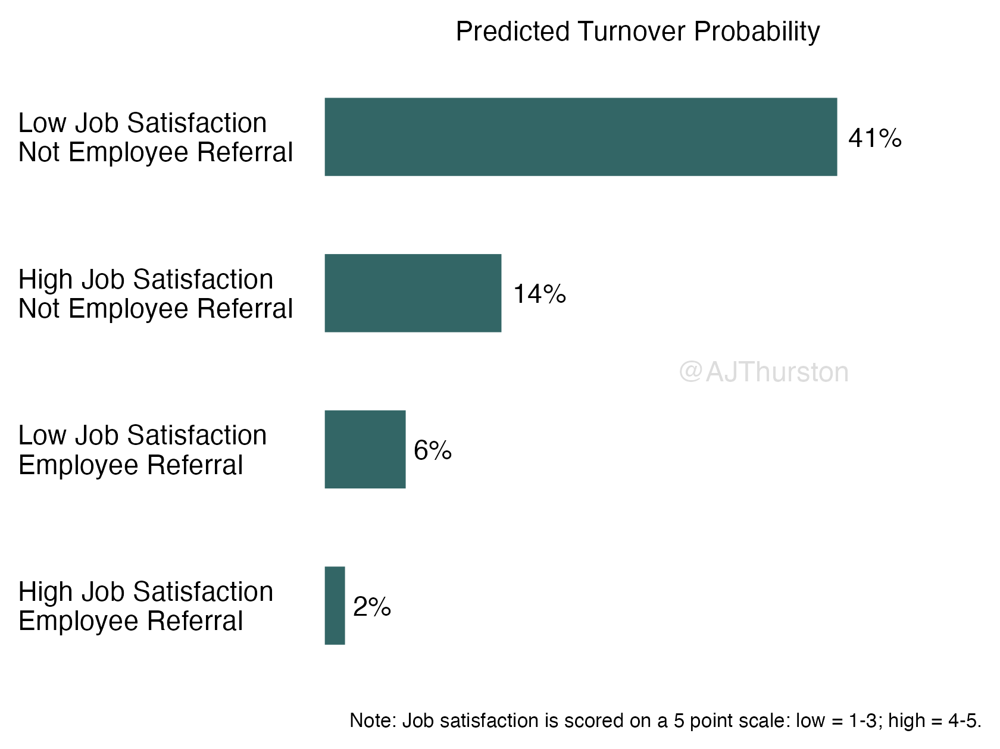

library(tidyverse)
df <- read.csv("turnover.csv") %>%
mutate(high_jobsat = recode(
jobsat,
`1` = 0,
`2` = 0,
`3` = 0,
`4` = 1,
`5` = 1)
)Predicted Probabilities
Introduction
Logistic regression is used to model the relationship between a dependent categorical, binary variable (e.g., pass or fail) and one or more independent continuous or categorical variables. In industrial and organizational psychology a common use of logistic regression is to predict turnover using predictors such as job satisfaction, age, and organizational tenure. These models can be rather simple, but results for logistic regressions can be difficult to interpret, especially for non-technical audiences.
Traditionally, the impacts of the predictors in a logistic regression are discussed in the form of odds ratios. An odds ratio indicates how the odds of the outcome change with a one-unit increase in the predictor variable. A number above 1 indicates higher odds and values less than 1 indicates lower odds. For example, consider a model which uses recruitment source, specifically, if the person was an employee referral or not, to predict turnover. If the result is an odds ratio of 1.2, this tells us that the odds of a turnover event occurring are 1.2 times higher if the person was recruited via employee referral. This is simple enough for categorical predictors, but for continuous predictors the interpretation is a bit more complicated. Consider another example where job satisfaction is used to predict turnover and results in an odds ratio of .75. This now requires a bit of math to interpret in the same way as group differences, suggesting for every 1 unit increase in job satisfaction, the odds of turnover are reduced by 25% (1-.75). Also, what does a unit mean? This unituitive interpretation becomes increasingly complicated as most logistic regression models have multiple predictors, and the odds only account for the effect of that specific predictor when all other predictors remain constant.
This complexity can make for misinterpretation of the results by technical and non-technical audiences alike. As an alternative, predicted probabilities provide a more straightforward approach to presenting the results of a logistic regression. The purpose of this tutorial is to demonstrate how to obtain and present predicted probabilities from a logistic regression and plot them in a format easily interpretable for all audiences, as well as some supplementary documentation for appendicies to include in a technical report to ensure accurate reporting.
Example and Dataset
In this example, an organization is experiencing a relatively high rate of turnover. They understand that job satisfaction is an important predictor of turnover, and, anecdotally, have noticed that employees who were recruited via current employee referral are less likely to leave the organization. However, they want to test this, formally, to establish the necessity for an employee referral incentive program.
The simulated dataset turnover.csv contains the following variables:
refer: A binary categorical variable denoting employee was referred by current employee
0. Not referred
1. Referred
jobsat: Employee job satisfaction measured on a 5-point, Likert-type scale: Overall, I am satisfied with my job
1. Strongly disagree
2. Disagree
3. Neither agree nor disagree
4. Agree
5. Strongly agree
turnover: Whether or not the employee voluntarily turned over
0. Active employee
1. Voluntarily turnover
Note, a variable denoting high vs. low job satisfaction is recoded below. This tutorial will leverage job satisfaction as categorical to simplify the explanation and the resulting data visualization product, but I will also include an supplement which treats this variable as continous and can be reported in an appendix in a technical report.
Logistic Regression
To test the impact of job satisfaction and employee referrals, we could report a traditional logistic regression using the standard indicators for APA report.
library(pscl)
# Logistic regression model
mod1 <- glm(turnover ~ high_jobsat + refer, df, family = "binomial")
summary(mod1)
Call:
glm(formula = turnover ~ high_jobsat + refer, family = "binomial",
data = df)
Coefficients:
Estimate Std. Error z value Pr(>|z|)
(Intercept) -0.3677 0.1778 -2.068 0.03862 *
high_jobsat -1.4392 0.2341 -6.148 7.85e-10 ***
refer -2.3055 0.7344 -3.139 0.00169 **
---
Signif. codes: 0 '***' 0.001 '**' 0.01 '*' 0.05 '.' 0.1 ' ' 1
(Dispersion parameter for binomial family taken to be 1)
Null deviance: 525.43 on 537 degrees of freedom
Residual deviance: 469.81 on 535 degrees of freedom
AIC: 475.81
Number of Fisher Scoring iterations: 6# Chi-square for model fit
mod1$null.deviance-mod1$deviance[1] 55.62173# P-value for Chi-square
1-pchisq(mod1$null.deviance-mod1$deviance,2)[1] 8.354428e-13# Pseudo R-squares
pR2(mod1)fitting null model for pseudo-r2 llh llhNull G2 McFadden r2ML
-234.90443301 -262.71529606 55.62172610 0.10585932 0.09822128
r2CU
0.15755119 # Odds ratios
exp(cbind(OR = coef(mod1), confint(mod1))) OR 2.5 % 97.5 %
(Intercept) 0.69231535 0.48643804 0.9782919
high_jobsat 0.23712299 0.14934619 0.3744715
refer 0.09971319 0.01603947 0.3326607Traditional logistic regression reporting usually leverages some indicators of classification accuracy as well.
df <- df %>%
mutate(pred_probs = predict(mod1, type = "response")) %>%
mutate(pred_class = ifelse(pred_probs > mean(turnover), 1, 0))
# Confusion matrix
cm <- table(df$pred_class,df$turnover)
# Overall accuracy
acc_overall <- sum(diag(cm))/sum(cm)
acc_overall[1] 0.7657993# Sensitivity
acc_sens <- cm[2,2]/sum(cm[,2])
acc_sens[1] 0.5145631# Specificity
acc_spec <- cm[1,1]/sum(cm[,1])
acc_spec[1] 0.8252874Based on these results, here’s what a traditional write-up would look like:
A logistic regression was conducted to predict employee turnover based on job satisfaction and recruitment via employee referral. Although the logistic regression model was statistically significant \(\chi^2\)(2, N = 538) = 14.33, p < .001, and explained approximately 6% of the variance in turnover according to the Nagelkerke \(R^2\), the model correctly classified about 77% of cases in terms of overall accuracy, with a sensitivity of 51% and a specificity of 83%. Higher job satisfaction was associated with a decrease in the likelihood of turnover (OR = 0.24, 95% CI [0.15, 0.37]). Recruitment via employee referral was significantly negatively associated with turnover (OR = 0.09, 95% CI [0.02, 0.33]).
Creating Predicted Probabilities
Instead of the traditional write-up, we’ll leverage predicted probabilties to simplify the explanation for non-technical senior leaders. The predict function can be used to obtain predicted probabilities. In this example, a dataset of possible configurations of high vs. low job sat and whether or not an employee was referred is created, then the model from the previous step is used to create the predicted probability of turnover based on those configurations.
# Creates a new dataset
probs_df <- data_frame(
high_jobsat = c(0, 1, 0, 1),
refer = c(0, 0, 1, 1)
)Warning: `data_frame()` was deprecated in tibble 1.1.0.
ℹ Please use `tibble()` instead.# Calculates the predicted probabilities
mod1_predict <- predict(mod1, newdata = probs_df, type = "response", se.fit = TRUE)
# Formats the dataset for later plotting
probs_df <- probs_df %>%
mutate(turnover = mod1_predict$fit) %>% # this is the predicted probability
mutate(ll.ci = mod1_predict$fit - (1.96 * mod1_predict$se.fit)) %>% # 95% CI lower limit
mutate(ul.ci = mod1_predict$fit + (1.96 * mod1_predict$se.fit)) %>% # 95% CI lower limit
mutate(category = case_when( # Creates a text variable explaining the categories in plain language
(high_jobsat == 0 & refer == 0) ~ "Low Job Satisfaction\nNot Employee Referral",
(high_jobsat == 1 & refer == 0) ~ "High Job Satisfaction\nNot Employee Referral",
(high_jobsat == 0 & refer == 1) ~ "Low Job Satisfaction\nEmployee Referral",
(high_jobsat == 1 & refer == 1) ~ "High Job Satisfaction\nEmployee Referral"
)) %>%
arrange(turnover) %>%
mutate(category = factor(category, levels = category)) %>%
mutate(label = paste0(floor(turnover*100+.5),"%")) # A percentage label
probs_df# A tibble: 4 × 7
high_jobsat refer turnover ll.ci ul.ci category label
<dbl> <dbl> <dbl> <dbl> <dbl> <fct> <chr>
1 1 1 0.0161 -0.00680 0.0390 "High Job Satisfaction\nEmpl… 2%
2 0 1 0.0646 -0.0218 0.151 "Low Job Satisfaction\nEmplo… 6%
3 1 0 0.141 0.104 0.178 "High Job Satisfaction\nNot … 14%
4 0 0 0.409 0.325 0.493 "Low Job Satisfaction\nNot E… 41% Plotting the Predicted Probabilities
In this example, a bar plot similar to an expectancy chart can be used to graphically display the predicted probabilities as research has shown this are more easily understood by non-technical audiences (Zhang & Wai, 2021). For the completeness of this tutorial, I used ggplot2 to make this barchart in R, but I might typically just make such a chart in Excel instead.
p <- ggplot(data=probs_df, aes(x=turnover, y=category))
p <- p + geom_bar(stat="identity", width = 0.5, fill = "#336666")
p <- p + geom_text(aes(label = label), hjust = -.2)
p <- p + annotate("text", x = .35, y = 2.5, label = "@AJThurston", color = "#DDDDDD", size = 4)
p <- p + scale_x_continuous(limits = c(0,.5), position = "top")
p <- p + scale_y_discrete()
p <- p + labs(x = "Predicted Turnover Probability",
caption = "Note: Job satisfaction is scored on a 5 point scale: low = 1-3; high = 4-5.")
p <- p + theme_void()
p <- p + theme(
axis.title.x = element_text(),
axis.text.y = element_text(hjust = 0),
plot.margin = margin(.25,.25,.25,.25,"cm"),
plot.caption = element_text(size = 8)
)
ggsave("predprobs.png",
plot = p,
width = 8,
scale = .7,
height = 6,
units = "in",
dpi = 300)
Appendix
As mentioned previously, the continuum of job satisfaction was artificially dichotomized for ease of interpretation. In a technical report, the full documentation of the logistic regression as reported earlier using odds ratios should be reported. Additionally a supplementary model using the full information from job satisfaction and complementary graphic should probably be described in the technical report as well.
Acknowledgements
Thanks to Brian Anderson for these two tutorials which influenced this one!
- http://a.web.umkc.edu/andersonbri/Interpretinglogisticregression.html
- http://a.web.umkc.edu/andersonbri/InterpretinglogisticregressionPartII.html
Also thanks to the UCLA Statistical Methods and Data Analysis group for this example which motivated the tutorial for the appendix reporting:
- https://stats.oarc.ucla.edu/r/dae/logit-regression/
References
Zhang, D. C., & Wai, J. (2021). Malleability of Statistical Perception: Impact of Validity Presentation on College Admission Test Policy Preferences. Collabra: Psychology, 7(1). https://doi.org/10.1525/collabra.24087